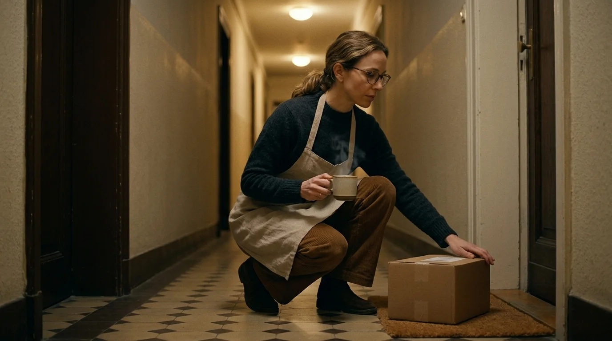
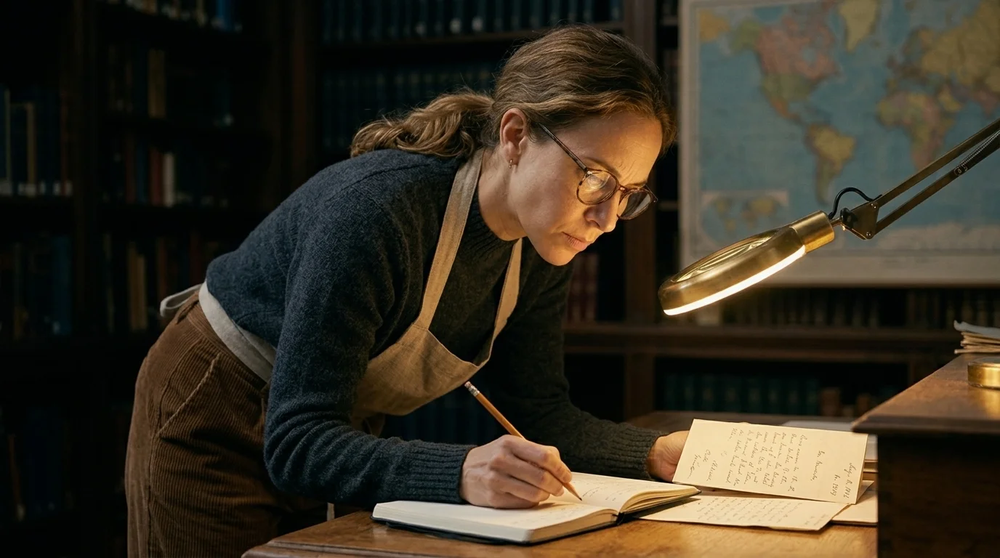
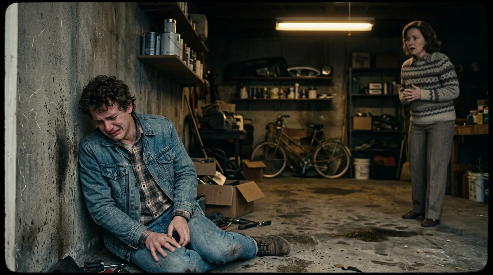

El repartidor ni siquiera esperó a que Clara firmase en la pantalla digital. Dejó la caja de cartón precintada sobre el felpudo del tercero derecha, masculló una disculpa sobre la lluvia en la glorieta de Bilbao y bajó los escalones de madera de tres en tres. Clara se agachó con una taza de café humeante en la mano izquierda. La etiqueta de envío, manchada por una gota de humedad, no llevaba su nombre, sino el de don Miguel Robledo: el vecino del tercero izquierda que la comunidad había enterrado tres semanas atrás en la más estricta soledad.
En el descansillo todavía flotaba ese olor a cera vieja, alcanfor y tubería fría que quedaba en los edificios centenarios de Chamberí cuando una puerta permanecía cerrada demasiado tiempo. Don Miguel había sido un hombre enjuto, de paso corto y bufanda de espiga que solo salía a comprar el pan y dos periódicos que leía despacio en el banco de la plaza. Apenas cruzaban un saludo cordial cuando coincidían junto a los buzones de latón.
Clara metió la caja en su salón. Tenía treinta y cuatro años y trabajaba restaurando protocolos notariales del siglo dieciocho para el archivo de la villa. Sus manos, habituadas a la fragilidad del papel de tina y a los desgarros de la tinta ferrogálica, abrieron el precinto con la precisión de quien teme romper algo vivo.
Dentro no había ropa ni enseres domésticos. Había trescientas cuarenta cartas.
Estaban agrupadas por décadas con gomas elásticas resecas que se partieron al primer contacto. Cada sobre de papel crema llevaba anotado un número de orden y un año con pluma estilográfica azul: desde mil novecientos ochenta y tres hasta noviembre del año en curso. Ninguno tenía sello de Correos ni matasellos. Todos estaban abiertos con un corte limpio de abrecartas y todos mostraban en el encabezamiento un único nombre sin apellidos: *«David»*.
Clara extrajo la primera hoja, fechada el catorce de noviembre de mil novecientos ochenta y tres. La caligrafía era firme, apretada y elegante:
*«Sé que no me estás escuchando, porque los muertos no tienen paciencia con los vivos. Pero si alguna vez alcanzas a oírme en ese silencio en el que te dejamos, solo te pido que esperes. Cuando estés preparado, dime que me perdonas».*

La lluvia arreciaba contra los cristales del mirador mientras la ciudad encendía las farolas anaranjadas. Clara extendió sobre la mesa de comedor una docena de cartas siguiendo la línea del tiempo. Lo que al principio parecía el diario desesperado de un padre en duelo pronto se convirtió en un enigma desconcertante.
En las cartas de los años ochenta, don Miguel relataba una y otra vez la misma escena: una noche de temporal en la carretera vieja de El Pardo, el pavimento brillante como charol negro, los limpiaparabrisas barriendo barro y un golpe sordo en el guardabarros delantero de un Seat 127 azul marino. Describía la rueda doblada de una bicicleta infantil en la cuneta, el vaho empañando el parabrisas y el pánico atroz que lo empujó a pisar el acelerador sin bajarse a mirar.
Pero al llegar a las cartas de mil novecientos noventa y cuatro, el relato crujía. El coche ya no era un Seat azul, sino una furgoneta blanca de reparto. Y don Miguel ya no regresaba de su turno en los talleres de artes gráficas, sino del hospital general, donde aseguraba haber pasado la tarde velando la agonía de su propio hijo pequeño.
Clara frunció el ceño y encendió la lámpara de aumento con la que limpiaba los códices. Tomó notas en su cuaderno de trabajo: las fechas no cuadraban. En el año dos mil dos, la narración volvía a cambiar: la víctima ya no tenía nueve años, sino seis; la bicicleta desaparecía de la cuneta y en su lugar aparecía una pelota de goma roja que rebotaba contra el asfalto.
No eran las mentiras calculadas de un culpable intentando eludir a la policía. Aquellas cartas nunca habían sido enviadas; don Miguel las había escrito para sí mismo, guardándolas en orden riguroso durante cuatro décadas. Era algo más desolador: el testimonio de una mente que se desmoronaba lentamente, un hombre devorado por el remordimiento que intentaba reconstruir un fantasma que se le escapaba entre los dedos. Cada invierno, al envejecer, don Miguel añadía detalles de otras pérdidas personales a la tragedia original, como si su memoria hubiese decidido juntar todos sus dolores en una sola herida para no tener que sangrar por varias a la vez.
A la mañana siguiente, Clara pidió permiso en el archivo para entrar en la hemeroteca municipal. Pasó cuatro horas revisando los microfilmes de la prensa de sucesos del otoño de mil novecientos ochenta y tres. El periódico *Pueblo* recogía la noticia en su edición del dieciséis de octubre: un niño de nueve años llamado David Alarcón había muerto en el arcén del kilómetro nueve de la carretera de El Pardo al ser embestido por un vehículo que se dio a la fuga. La bicicleta quedó destrozada entre los matorrales. La brigada de tráfico no halló restos de pintura concluyentes ni huellas de frenada.
Al final de la crónica aparecía un párrafo que hizo que a Clara se le helara el café en el estómago:

*«La policía tomó declaración en calidad de testigo presencial a don Miguel Robledo, de treinta y siete años, quien afirmó haber visto un automóvil oscuro alejarse a gran velocidad mientras él caminaba hacia la parada de autobús. Tras incurrir en contradicciones reiteradas sobre el modelo del vehículo y la dirección de la fuga, su testimonio fue desestimado por los investigadores».*
Clara cerró el visor de microfilmes con un chasquido metálico. Don Miguel no había sido un conductor prófugo. Había estado allí, a pie de carretera, viendo morir al niño. O tal vez algo mucho peor: había mentido a la policía para desviar la atención.
Revisó entonces los registros del padrón municipal correspondientes a don Miguel Robledo. Jamás se había casado. Nunca había tenido hijos. Aquella mención al hijo pequeño muerto en el hospital en las cartas de los años noventa correspondía, en realidad, a su sobrino Javier, fallecido de meningitis cuando apenas tenía cinco años. El anciano había mezclado en su soledad la muerte ajena que no pudo evitar con la muerte familiar que no pudo sanar.
De vuelta en el piso, Clara revisó el fondo de la caja de cartón. Allí, debajo del fajo de cartas amarillentas, descansaba un sobre blanco de papel moderno, sin amarillear, con matasellos impreso por la empresa de paquetería urgente fechado apenas cinco días antes del ingreso hospitalario de don Miguel.
A diferencia de las trescientas cuarenta cartas anteriores, este sobre sí tenía una dirección de destino:
*«Para doña Carmen Varela. Residencia de Mayores Los Tilos, habitación doce. Miraflores de la Sierra».*
Dentro había una sola cuartilla de papel cuadriculado, arrancada de una libreta escolar. La letra era temblorosa, casi ilegible por la debilidad del pulso, pero el mensaje tenía una claridad cortante:
*«Carmen: el médico dice que este invierno no lo paso. Ayer soñé con la curva del kilómetro nueve y por primera vez en cuarenta años no había niebla. Ahora ya sé que no era David quien iba en aquel coche conmigo. Y sé que nunca debí aceptar vuestro silencio. Dentro de esta caja va todo lo que callamos. Haz lo que debiste hacer cuando tu hijo todavía tenía alma».*
Clara pasó la yema del pulgar sobre el papel. La tinta estaba fresca. Don Miguel había intentado enviar la caja a Miraflores antes de morir, pero la agencia de transportes había confundido el remitente con el destinatario al transcribir los datos de la vieja etiqueta del portal.
No lo dudó. Metió el sobre en su bolso de cuero, cogió el abrigo de lana y bajó a la estación de Chamartín para tomar el cercanías hacia la sierra.
La residencia Los Tilos olía a lavanda sintética y sopa de verduras. Doña Carmen Varela estaba sentada junto a un ventanal que daba a los robles desnudos del jardín, con una manta de cuadros escoceses sobre las piernas. Tenía ochenta y un años, las manos nudadas por la artrosis y unos ojos negros muy vivos que escrutaron a Clara con desconfianza desde el primer instante.
—Usted no es de la parroquia ni viene a traerme pastillas —dijo la anciana con voz queda pero firme—. ¿Quién es?
Clara se sentó en la silla metálica a su lado. Sacó el sobre blanco y lo depositó sobre la mesa de formica sin abrirlo.
—Soy vecina de Miguel Robledo en Madrid. Murió hace tres semanas. La empresa de mensajería me entregó por error la caja que él intentó enviarle a usted antes de ingresar en el hospital.

Carmen Varela no tocó la carta. Sus dedos arrugados se cerraron sobre la orilla de la manta con tanta fuerza que los nudillos se le pusieron blancos. Durante casi un minuto solo se escuchó el tic-tac monótono del reloj de pared de la sala común.
—Miguel siempre fue un blando —murmuró al fin, tragando saliva con dificultad—. Un hombre bueno, pero blando como la miga de pan. Pensé que se habría muerto hace diez años.
—Escribió trescientas cuarenta cartas pidiéndole perdón a un niño llamado David —explicó Clara, mirándola a los ojos—. Durante décadas creyó que él mismo lo había atropellado. Cambiaba de coche, cambiaba de hora, mezclaba la muerte de su sobrino... Tenía la cabeza rota por la culpa. Hasta que escribió esta última carta.
La anciana giró el rostro hacia el ventanal. Una ráfaga de viento desprendió las últimas hojas marrones de las ramas de los robles.
—Miguel no conducía ningún coche aquella noche, muchacha —dijo Carmen, y por primera vez su voz tembló—. El que conducía era mi hijo Julián. Venían de cenar en Colmenar Viejo. Habían bebido los dos, pero Julián iba al volante de mi Seat azul. Cuando atropelló al chico de la bicicleta en la oscuridad de la curva, Julián no frenó. Entró en pánico. Miguel le agarró el volante gritando que parasen, pero mi hijo aceleró hasta meterse en el garaje de casa. Llegó blanco como la cal, llorando, diciendo que su carrera de abogado se había terminado antes de empezar.
Clara sintió una punzada en la garganta.
—Y usted convenció a Miguel para que callara.
—Yo no lo convencí; se lo supliqué de rodillas —confesó la anciana sin apartar la mirada del jardín—. Miguel era huérfano, no tenía a nadie en el mundo y quería a Julián como a un hermano pequeño. Le dije que si hablaba, nos destrozaba la vida a los tres. Miguel aceptó declarar a la policía que él venía caminando por el arcén y que vio pasar un coche oscuro que no pudo identificar. Lo hizo tan mal que los guardias creyeron que era un borracho desorientado y no le hicieron caso.
—¿Y su hijo?
—Julián murió hace quince años en un hospital de Valencia, podrido por un cáncer de colon —respondió Carmen con una mueca amarga—. Jamás dijo una palabra. Se casó, tuvo dos hijas, prosperó en un bufete y se olvidó de aquella noche en cuanto el caso prescribió. Pero Miguel no pudo. Miguel vivía en frente de mi casa vieja. Cada vez que me lo cruzaba en el portal lo veía más encorvado, más mudo. Empezó a escribir para no volverse loco. Al principio me mandaba notas a mí diciéndome que debíamos confesar. Luego dejó de hablarme. Y con los años, cuando la memoria empezó a gastársele, su cabeza hizo algo terrible: borró a Julián del asiento del conductor y se puso a sí mismo al volante.
Carmen bajó por fin la mirada hacia el sobre blanco.
—Se castigó a sí mismo con el pecado de otro porque era incapaz de soportar que su mejor amigo hubiera sido un monstruo cobarde. Y terminó creyéndose su propio castigo.
Clara regresó a Madrid en el último tren de la tarde. La ciudad la recibió bajo una llovizna fría que convertía el asfalto de la Castellana en un espejo oscuro, idéntico al que don Miguel había descrito cientos de veces en sus hojas de papel crema.
En su piso, abrió de nuevo el sobre blanco que Carmen Varela le había devuelto sin leer. Dentro, doblada bajo la cuartilla de despedida, había una segunda hoja que no había visto antes: un acta manuscrita firmada ante notario el año anterior, donde don Miguel relataba con pelos y señales la verdad del accidente de mil novecientos ochenta y tres, identificando la matrícula del Seat azul de Julián y aportando el número de la causa penal que yacía archivada en los juzgados de plaza de Castilla. Al pie del documento, con trazo trémulo pero perfectamente lúcido, don Miguel había escrito a lápiz:
*«Para la hermana de David Alarcón. Que alguien le diga que su hermano no murió olvidado en una cuneta. Que hubo un hombre que pasó cuarenta años arrodillado frente a su recuerdo».*
Clara no quemó las cartas. Las guardó con esmero en cajas de conservación neutra, libres de ácido, en el archivo de su taller, clasificadas por años y meses como los documentos valiosos que merecen sobrevivir al olvido. A la mañana siguiente localizó el teléfono de la hermana de David en el registro civil de El Pardo para concertar una cita y entregarle la confesión notarial.
Antes de apagar la luz del taller, Clara tomó la última cuartilla de don Miguel y la colocó sobre la mesa de trabajo, junto a la ventana. Comprendió entonces que don Miguel no había escrito durante cuarenta años para conseguir el perdón de un muerto, sino para mantener encendida la brasa del remordimiento hasta que la memoria le devolviera el coraje necesario para salvar la dignidad de los vivos.